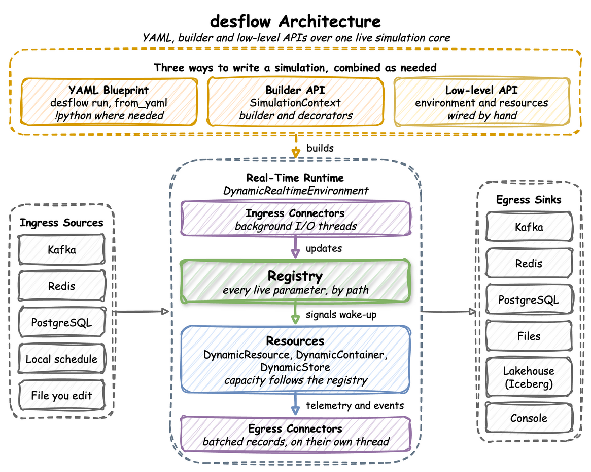
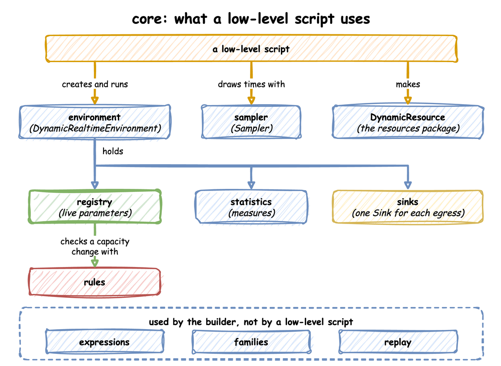
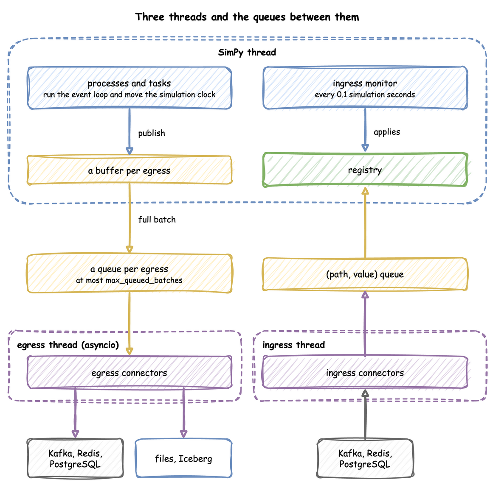

How desflow Works
This page shows how desflow is built: the parts that run a model, why each one exists, and how a run moves through them. Each part links to the How It Works section that describes it in full.
One run moves through the parts of desflow like this:

Whichever way a model is written, it builds one environment, and one run goes the same way from there. The registry paths, the records, the batching and the connectors are therefore the same in all three ways. How It Works follows a model from its file or script to the environment.
What It Is
desflow is built on SimPy. SimPy gives the event list, the clock, processes and resources, and desflow keeps all of them. SimPy leaves seven things to the modeller, and each part of desflow adds one of them:
| Left to the modeller in SimPy | What desflow adds | Read |
|---|---|---|
| the code around a model: a class of parameters, an entity class, a model class and a loop over runs | three ways to write a model, each built on the one below | Writing a Model |
one pacing factor, fixed when the environment is made |
one environment that runs history at full speed, then switches to the wall clock | Time and Pacing |
| random times, drawn by the model's own code | ten checked distributions, each with a random stream of its own | Arrivals and Services |
| parameters that only the model's code changes | a registry of named paths that connectors, scenarios and processes change during a run | Live Parameters |
| resources, stores and containers that keep the capacity they were made with | resources, stores and containers whose capacity follows the registry | Resources |
| output, which the model prints or logs | records of a fixed shape, written to sinks on a thread of their own | Egress |
| statistics, replications and confidence intervals | statistics collected during the run, replications, experiments and explain |
Built-in Statistics |
Coming from SimPy compares each change with plain SimPy.
How It Works
Look first at how a model gets from a file or a script to a run, then at the parts the run holds:
![Top row: YAML file, Python (builder) and Python (low-level), the three ways to write a model. The YAML file goes to blueprint (loader, models, build), which calls the builder, SimulationContext (builder.context). The builder script reaches SimulationContext directly. run() builds DynamicRealtimeEnvironment (core.environment, a SimPy environment), and the low-level script builds it by hand. The environment holds registry (live parameters), statistics (measures) and egress queue (batches of records). connectors/ingress (its own thread) updates the registry, and the egress queue writes to connectors/egress (its own thread). A group at the bottom, tools, holds cli, which imports loading, then analysis (many runs) and explain (graph and formulas)](../../assets/diagrams/how-it-works.png)
Each of the three ways ends in one DynamicRealtimeEnvironment. A YAML file is read by blueprint: loader reads the file, including !python and !include, models define and check each section, and build turns the sections into calls on SimulationContext; the arrow labelled calls the builder shows them. A builder script makes those calls itself, with the builder's methods and decorators. A low-level script makes neither: it builds the environment by hand and writes SimPy processes against it. Writing a Model helps choose between them.
SimulationContext in builder.context collects what a model declares. run() checks the declarations and builds the environment, then starts the model's loops and processes and runs it, in the order What run() Does lists. The environment holds the parts in the row under it:
- registry: holds every live parameter (Live Parameters).
- statistics: collects the measures of the run while it goes on (Built-in Statistics).
- egress queue: the records that tasks and processes publish are buffered for each sink, and full batches wait in a queue.
connectors/egresswrites from it, on a thread of its own, and the arrow points the way the records go (Egress). - connectors/ingress: read parameter changes from outside, on a thread of their own, and update the registry. The arrow points up, because a change reaches the model only through the registry; the environment applies each one from a queue (Ingress). Threads and Queues shows both queues.
The group at the bottom holds the tools. cli is the desflow command and calls loading, the path by which desflow run and desflow explain turn a blueprint or a builder file into a context (Command Line). analysis runs a model many times for replications and experiments. cli and explain read a blueprint or a builder file; analysis also runs a low-level model, as a LowLevelModel, from Python. explain is in the last row of the table below.
Each part is described in full on its own page. In short:
| Part | How it works | Read |
|---|---|---|
| Writing a model | A YAML blueprint, the builder and the low-level API are layers. from_yaml makes the calls a builder script makes, and the builder's run() makes the calls a low-level script writes by hand. |
YAML Blueprints, What run() Does |
| Environment and pacing | DynamicRealtimeEnvironment is SimPy's RealtimeEnvironment with the registry, the connectors and the statistics added. It runs without waiting at factor: 0 and switches to real time at go_live_at. |
Time and Pacing |
| Random times | A distribution reads its parameters at each draw, so a change applies from the next draw. Each one has its own random stream, made from the run's seed and its registry path. | Arrivals and Services |
| Registry | Every live value sits under a dot path, such as Shop.service.packing.mean. Each update is checked before it is stored. |
Live Parameters |
| Resources, stores and containers | Each waits on its registry path, so its capacity changes during a run. A resource that shrinks lets its busy units finish. | Resources, Stores and Containers |
| Threads, ingress and egress | The SimPy thread runs the model. Ingress and egress run their connectors on threads of their own, each on an asyncio loop, so a network wait never stalls a simulation step. | Threads and Queues, which also compares these queues with the waiting lines of the model; Ingress, Egress, Write a Connector |
| Measurement and explain | One statistics object collects readings while the run goes on. Replications run the model again for each seed and give a Student t interval. desflow explain applies queueing formulas to the model before anything runs. |
Built-in Statistics, Replications, Experiments, Command Line |
How a YAML File Becomes Builder Calls
Follow the file down the left column, then look at the group on the right, which joins each section of the file to the builder call it becomes:
![blueprint: how a YAML file becomes builder calls. A YAML file is read by loader (${VAR}, !python, !include), checked by models (refuses an unknown key, drawn in red as a check) and built by build (one call for each entry). A group, one builder call for each entry, joins each YAML section to its call: tasks to @app.task, arrivals to add_arrival, resources to add_resource, signals to add_signal, and egress to add_egress, drawn in purple because it makes a connector. The calls go to SimulationContext (builder.context). Also in blueprint, for the tools: schema, model_check, expectations](../../assets/diagrams/blueprint-package.png)
- loader reads the file, replaces
${VAR}with an environment variable, and resolves!pythonand!include(YAML Blueprints). It keeps the line each key came from, so an error names the line. - models checks each section and refuses an unknown key, so a misspelt key is reported, not ignored.
- build makes one builder call for each entry, so a YAML file and a builder script that make the same calls build the same model. From
SimulationContexton, a run goes as the next diagram shows.
How a Builder Script Becomes a Run
Look at the two halves: the top shows where the builder keeps what a script declares, and the group below shows what run() does with it, in order. run() is start() then finish(). A script that steps through a run itself calls start(), then step() or advance(), and ends the run with finish() or close():
![builder: how a builder script becomes a run. A builder script calls @app.task, add_arrival, add_resource, add_signal, add_egress and the others on context (SimulationContext), which keeps each kind in its own module: tasks, arrivals, holders and signals; holders starts breakdowns. A group, when the script calls run(), with the note that start() does steps 1 to 4 and finish() does step 5: 1. checks, model_checks then task_checks, in red; 2. keeps the run, runs (RunState); 3. builds environment, registry (green), statistics, connectors (purple) and resources; 4. starts, as SimPy processes, the arrival loops and scenario (steps), and each arrival starts task (TaskRun), which hands its entity to flow (routes the entity on) and keeps its place in a batch in batches (BatchSeat); 5. runs to until, stop or drain, then closes the run](../../assets/diagrams/builder-package.png)
start() checks the model, builds the run and starts it, and finish() runs it to its end and closes it. What run() Does gives the steps in order.
What a Low-Level Script Uses
A low-level script uses the engine directly. Look at the top row for what the script calls, and at the row below it for what the environment holds:

- environment: the script creates it, registers its parameters, calls
setup_stats,setup_ingressandsetup_egress, starts its processes withenv.process, and callsrun(). - sampler: draws every random time, with one random stream for each distribution (Arrivals and Services).
- DynamicResource: a resource whose capacity follows its registry path (Resources).
- rules: the checks a blueprint and the builder share; the registry uses one of them to check a capacity before it stores it.
- expressions, families and replay serve the builder and YAML: conditions and amounts, resources and signals made from a computed key, and arrivals read from a recorded file.
ARCHITECTURE.md draws the same three diagrams as text, with every module.
Threads and Queues
What the Environment Holds
A DynamicRealtimeEnvironment is SimPy's RealtimeEnvironment with four additions: the registry at env.registry, the ingress connectors, the egress connectors with their buffers, and the statistics at env.stats. Whichever way a model is written, SimulationContext.run() builds this environment.
Threads
A run uses three threads, with queues between them. Records flow from the processes to the sinks, and parameter changes flow from the sources to the registry:

- SimPy thread: runs the model. When a process publishes a record, the record goes into a buffer for each sink, and a full buffer is handed to that sink's queue.
- Egress thread: runs the sinks' asyncio code, which drains the queues and writes to Kafka, files or databases, so network waits never stall a simulation step.
- Ingress thread: runs the sources, which put
(path, value)pairs on a queue.
Two Kinds of Queue
The word queue means two different things in desflow:
![Left: waiting lines in the model. Orders wait in resource.queue, in fifo, lifo or priority order, until they are granted a packer in resource.users; a request past queue_limit raises QueueFull. They are part of the model, and their length and waits are in the records. Right: hand-off queues between threads. The ingress queue has no limit and is applied to the registry every 0.1 simulation seconds; each sink has a buffer on the SimPy thread, then a queue of at most max_queued_batches that the egress thread writes from. They are not part of the model](../../assets/diagrams/two-queues.png)
- A waiting line in the model holds entities, such as orders waiting for a packer. A resource keeps its line in
queue, orderedfifo,lifoor bypriority, and a request past itsqueue_limitraisesQueueFull. Stores and containers have lines of puts and gets that wait. These lines are what a study measures: their lengths and waits are in the records and the statistics. - A hand-off queue holds data on its way between the threads above. The ingress queue has no limit, and the ingress monitor applies it. Each sink has its own queue of at most
max_queued_batchesbatches. When a sink's queue is full, the simulation waits, so a slow sink slows the run instead of building a backlog. When it stays full fordrain_stall_seconds, the run stops rather than lose records. These queues change how fast the records arrive, never what they hold.
Processes the Environment Starts
Besides your own processes, the environment starts these, as events of its own that step() and peek() do not count:
- an ingress monitor, which applies queued changes every 0.1 simulation seconds;
- a lag monitor, which publishes
system.simulation.lag_secondseverylag_interval, at afactorabove 0 or after going live; - a timed flush per sink, at a
factorabove 0; - the statistics timer;
- the warm-up reset.
They share SimPy's one event queue with the model's events, so run() processes them in order with the model's events. A script that steps the model never sees them. advance() and finish() run them in the same way. An environment subclass that overrides step() sees every event inside run(), desflow's own included, and only the model's events when a script steps outside run().
SimPy and desflow
SimPy's RealtimeEnvironment takes one factor for the whole run, and raises an error when the model falls behind the wall clock. desflow runs without waiting at factor: 0, switches to real time at go_live_at, and stamps every record with a logical time. A paced run is strict by default, as SimPy's is, and strict: false reports falling behind as telemetry instead. SimPy and desflow compares the two.
For Contributors
A contributor who changes desflow itself can read ARCHITECTURE.md, which holds the code map and the rules for imports.